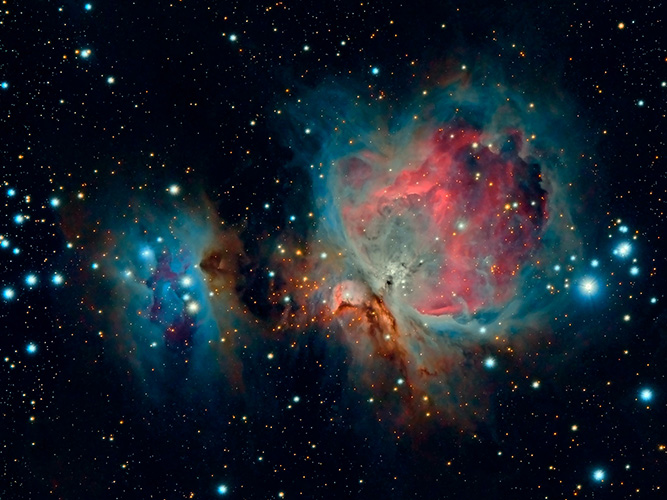
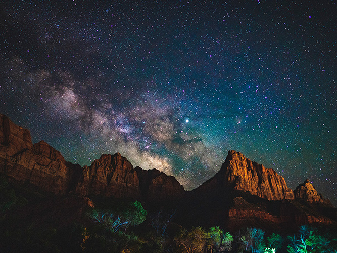
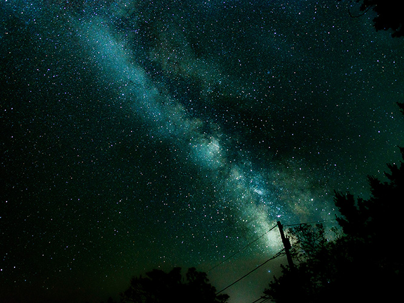

"Ven a vivir el Universo en todo su esplendor"
|  |
Guillermo Ferla Nikon, D7500 Publicado el 3 de Diciembre de 2018 |
|  |
Casey Horner Sony, ILCE-7M3 Publicado el 11 de Junio de 2019 |
|  |
Nathan Anderson Nikon Corporation, Nikon D750 Publicado el 23 de Junio de 2017 |